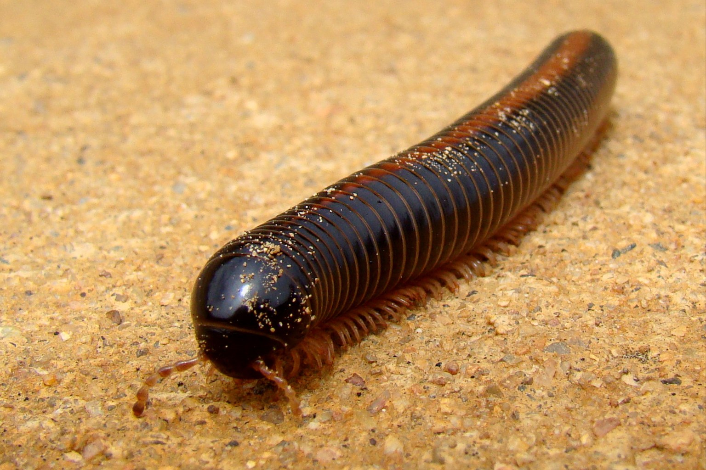

Giant African Millipede Substrate: Depth, Calcium and the Chamber They Moult In
A millipede burrows, eats the soil and hardens its shell with calcium from it. A shallow, calcium-poor substrate is a slow starvation of the exoskeleton.

A giant African millipede (Archispirostreptus gigas) needs its substrate at 8-12 cm deep in a 45 × 45 × 60 cm enclosure, because this species eats its bedding and bores a sealed chamber in it to moult. Shallow, dry substrate is the single most common reason a shed fails. Get the depth right and ecdysis is unremarkable; get it wrong and you find a half-shed animal curled on the surface, which almost never ends well.
The night the shed went wrong
I had a subadult female in a plastic tub with maybe 4 cm of coco fibre, because I had read somewhere that millipedes don't need depth. She was eating and drinking and doing millipede things. Then one Tuesday evening I found her on top of the substrate, curled in a loose C, with a pale rider — an old cuticle still clinging to the last third of her body. The skin was dry and papery, not the soft translucent shell it should have been. I had let the tub dry out over three days while I was away. She recovered after two weeks with a wet corner and no handling, but she lost three segments and her rear end never looked right again. That was the week I stopped treating these as low-input animals.
What happens during a millipede moult
Millipedes grow by ecdysis — they shed the old exoskeleton and expand into a soft new one before it hardens. In A. gigas the process runs over days, not hours. The animal retreats into a chamber it has excavated, the old cuticle separates, and the new one is pale and permeable until it tans. That permeability is the failure point: the soft cuticle needs ambient humidity above roughly 70-80 % relative humidity to finish hardening without desiccating. Below that, it sets unevenly, the animal cannot free itself cleanly, and you get the dry rider I described.
There is a second mechanism at work, and it is why I keep saying this species eats its substrate. The gut flora that digest plant material colonise the animal partly through what it ingests. Fresh, moist, leaf-litter-rich medium is both food and inoculation. Spent dry substrate is neither.
One number decides most of this —
Building the substrate to depth
The mix I use is roughly 60 % coco fibre, 30 % well-rotted hardwood leaf litter (oak and beech), and 10 % crushed cuttlebone or oyster shell grit, kept just damp — not dripping. The grit is the calcium source, and my working assumption is that it buffers the gut against acidic leaf matter. I cannot point to a controlled study giving the calcium requirement for this species; 10 % is what has worked in my notes and what other keepers report. Treat it as a starting point.
- Fill to 8-12 cm of loose substrate for adults and subadults; 5-8 cm for juveniles under 10 cm body length.
- Press the bottom third down firmly to hold moisture; leave the top two-thirds loose so the animal can burrow.
- Add a surface layer of dead leaves for cover and food.
- Mist one corner twice a week and let the opposite corner dry slightly, so the animal can choose.
- Replace about a third of the substrate every eight to twelve weeks, mixing old material back in so gut flora carry over.
The biggest avoidable failure is a layer too shallow for the animal to bury its whole body. I have seen it in a dozen keeper photos: a millipede curled on the surface because there is nowhere to go. Depth is not decorative.
Reading the animal and adjusting
Millipedes do not have the stress postures reptiles do, but their behaviour tells you whether the enclosure is working. A healthy animal stays buried or under cover by day and forages at night. One that sits in the open in daylight, curled tight, is too dry above or too wet below. One that ignores food and sits out is usually going into a moult and wants to be left alone.
- Daytime surface activity: check depth and moisture first, then temperature.
- Pale, papery shed on the surface: too dry; raise humidity and leave the animal alone.
- No food for more than ten days with a plump abdomen: pre-moult; do not handle or disturb the substrate.
- Visible mites moving around: springtails outcompete them; replace the surface litter.
| Stage | Body length | Substrate depth | Calcium source | Handling |
|---|---|---|---|---|
| Juvenile | under 10 cm | 5-8 cm | cuttlebone scraped fine, mixed through | observe only |
| Subadult | 10-18 cm | 8-10 cm | 10 % shell grit by volume | occasional, dry hands |
| Adult | 18-28 cm | 10-12 cm, tamped base | 10 % shell grit plus a cuttlebone half | brief, at night, never during moult |
If your animal is small for its stage, use the shallower figure. If you keep several together, go deeper — competition for chamber space is real, and a crowded moult is a failed moult.
Temperature, humidity and the chamber
I keep the warm end at 24-27 °C and the cool end at 20-22 °C, never below 18 °C. Relative humidity runs 75-85 % in the substrate but 60-70 % in the open air above it, because this is a forest-floor animal that wants a damp burrow and drier air to breathe. That sounds backwards and is easy to get wrong: misting the whole tank to 90 % can drown a moulting animal. Mist the corners, not the centre.
An adult about to moult excavates a smooth-walled cell, 6-8 cm down, its entrance plugged with a wad of substrate. Do not break one open to check. With the depth and moisture right, leave it for the two to three weeks the process takes.
When the evidence is thin
Much of what keepers know about A. gigas moulting is observational rather than experimentally verified. I cannot point a reader to a published dose-response for calcium supplementation in this species, and the humidity band above is drawn from keeper experience and the general physiology of diplopods, not a single controlled trial. What I can defend is the mechanism: a soft new cuticle plus dry air equals a failed shed. Everything else is calibrated experience. If in doubt, deepen the substrate, keep one corner moist, and do not disturb. The animal emerges pale and soft and hardens over about a week; wait until it is dark and moving normally before offering food.
Frequently asked questions
How deep should giant African millipede substrate be?
For adults, 10-12 cm, with the bottom third pressed firm and the top loose so the animal can build a sealed moulting chamber. Juveniles under 10 cm need 5-8 cm. Depth matters more than the exact mix, because a shallow layer leaves no room to bury and seal a chamber.
Do I need to add calcium to the substrate?
I mix about 10 % crushed shell grit or fine cuttlebone by volume through the substrate and keep a cuttlebone half on the surface. The exact requirement for this species is not well established in published work, so treat it as a working practice. A millipede eating constantly with no weight gain may want more.
My millipede is on the surface with pale skin stuck to it — what now?
That is a dry moult, usually from humidity below 70-80 % during ecdysis. Do not pull at the skin. Mist one corner to a damp but not soaked texture, hold temperature at 24-27 °C, and leave the animal alone. Most survive; some lose segments. Deepen the substrate before the next moult.
What we actually use
Three pieces of equipment that do most of the work in a Giant African Millipede setup. Nothing here is here because a brand asked.
-
Check price on AmazonHabitat & Decor
Coco Fibre Substrate Block
The base of the substrate: 10–15 cm of it, damp enough to hold a burrow without collapsing.
Typical price $8–15 -
Check price on AmazonHabitat & Decor
Digital Hygrometer & Thermometer, 2-pack
Below 70 % the moulting chamber dries and the new cuticle hardens before the animal is out of the old one.
Typical price $16–28 -
Check price on AmazonHabitat & Decor
Snug Hide Cave, Medium (pair)
Cork bark on the surface gives a humid retreat above ground while the deep layer does the rest.
Typical price $14–24
Links open Amazon in a new tab. We do not set or track prices.
Affiliate disclosure. As an Amazon Associate, we earn from qualifying purchases. Every card in this guide is an affiliate link — it costs you nothing, and we only list gear we have run in our own enclosures.